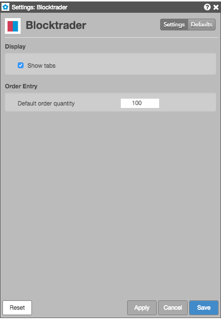

These settings affect only the selected Blocktrader widget. To update the default settings with these values for newly-opened Blocktrader widgets, or to apply them to existing opened widgets, click Defaults.

| Setting | Description |
|---|---|
| Show tabs | Sets whether to display tabs in the Blocktrader widget. |
| Setting | Description |
|---|---|
| Default order quantity | Sets the default order quantity for each leg of the trade. |